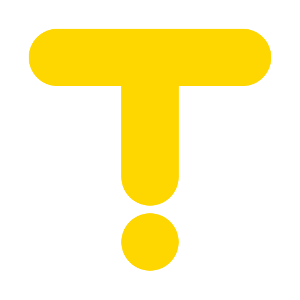

ANALYSIS / 01
音訊概況
warm-loop.wav24 kHz · mono · 8 s
Sample peak—dBFS
RMS—dBFS
合成速度設定108BPM · 非偵測結果
WAVEFORM / PEAK ENVELOPE
點擊定位；拖曳選區或選區邊緣。拍格來自合成設定。
0:00 / 0:08
● 本頁已計算 peak / RMS整段 · 跟隨 A/B 切換

tactus 視覺基準品牌、tokens 與元件展示集中在這裡。以已接受的深色介面與波形為基準，讓小工具與未來工作區共用同一套樣式。
這裡只試「共用元件放進工作區」的密度。輸出區塊由 code 產生；目前不提供拖曳編曲，也尚未定義正式 Studio 操作模型。
def render(*, brightness=0.4):
drums = make_drums()
keys = make_phrase(brightness)
return {"outputs": {"mix": drums + keys}}
# 簡化示意；本頁不執行此程式。字體方向沿用 Outfit 與 IBM Plex Mono；這份離線展示 先用系統中文與等寬字體，尚未進入字型細部比較。
緊湊：34 px 控制項、16 px 面板留白。
舒展：42 px 控制項、24 px 面板留白。
兩種都保留清楚的鍵盤 focus。
Widget 負責一個任務。Studio 用相同的按鈕、數字、波形與狀態，再組合側欄與資訊區。
共振圓弧保留在品牌與歡迎區。工作區讓波形、分析資料和選取狀態清楚可讀。
共同維護一份視覺基準：
色彩、尺寸與狀態從 tokens.css 讀取。上方選項可以比較密度與邊界；切換只影響本頁。